Steward
分享是一種喜悅、更是一種幸福
手機 - Nokia N900 - Easy Debian - 安裝系統(Debian 7)
參考資訊：
http://qole.org/files/debian_wheezy4sulu_armel.img.lzma
login
#!/bin/sh
CHMODE=$1
CHUSER=$2
CHROOT=`dirname $0`
_usage(){
echo "Usage: login [cli|lxde|xfce4] [root|user]"
}
_mount(){
sudo mount -o bind /sys "$CHROOT/sys"
sudo mount -o bind /proc "$CHROOT/proc"
sudo mount -o bind /dev "$CHROOT/dev"
sudo mount -t devpts none "$CHROOT/dev/pts"
sudo mount -o bind /dev/shm "$CHROOT/dev/shm"
sudo mount -o bind /var/tmp "$CHROOT/var/tmp"
sudo mount -o bind /var/run/pulse "$CHROOT/var/run/pulse"
sudo mount -o bind /var/run/dbus "$CHROOT/var/run/dbus"
sudo mount -o bind /var/lib/dbus "$CHROOT/var/lib/dbus"
sudo mount /dev/mmcblk0p1 "$CHROOT/home/user/MyDocs"
}
_umount(){
sudo umount "$CHROOT/var/lib/dbus"
sudo umount "$CHROOT/var/run/dbus"
sudo umount "$CHROOT/var/run/pulse"
sudo umount "$CHROOT/var/tmp"
sudo umount "$CHROOT/dev/shm"
sudo umount "$CHROOT/dev/pts"
sudo umount "$CHROOT/dev" &> /dev/null
sudo mount -o bind /dev "$CHROOT/dev"
sudo umount "$CHROOT/dev"
sudo umount "$CHROOT/proc"
sudo umount "$CHROOT/sys"
sudo umount "$CHROOT/home/user/MyDocs"
}
if [ `whoami` == "root" ] ; then
echo "Run me as user"
exit 1
fi
if [ "$CHMODE" != "cli" ] && [ "$CHMODE" != "lxde" ] && [ "$CHMODE" != "xfce4" ] ; then
_usage
exit 2
fi
if [ "$CHUSER" != "root" ] && [ "$CHUSER" != "user" ] ; then
_usage
exit
fi
_umount &> /dev/null
_mount
export GTK_MODULES=libgtkstylus.so
if [ "x$DISPLAY" = x ] ; then
export DISPLAY=:0.0
fi
if [ "x$GTK_MODULES" = x ] ; then
export GTK_MODULES=libgtkstylus.so
fi
if [ "$CHMODE" = "cli" ] ; then
sudo chroot $CHROOT su - "$CHUSER"
_umount
exit 0
fi
if [ "$CHMODE" = "lxde" ] ; then
if [ ! -f "$CHROOT/usr/bin/startlxde1" ] ; then
echo "Not found LXDE installed"
exit 4
fi
fi
if [ "$CHMODE" = "xfce4" ] ; then
if [ ! -f "$CHROOT/usr/bin/startxfce41" ] ; then
echo "Not found XFCE4 installed"
exit 4
fi
fi
export DISPLAY=:0
sudo chroot $CHROOT su - "$CHUSER" -c 'echo "chroot is now open"'
sudo chroot $CHROOT su - "$CHUSER" -c '/usr/bin/Xephyr :1 -screen 800x480 -br -ac' &
while [ "x$PARWIN" = "x" ] ; do
export PARWIN=`wmctrl -l | grep -i "N/A Xephyr" | awk '{print $1}'`
done
sudo chroot $CHROOT su - "$CHUSER" -c "DISPLAY=:1 habak -mf /usr/share/fonts/truetype/DroidSans-Bold.ttf -ht 'Welcome to Debian7'"
DISPLAY=:0 ; sudo wmctrl -i -r $PARWIN -T 'Debian7'
sudo wmctrl -i -r $PARWIN -b toggle,fullscreen
zenity --display=:0 --info --title="Information" --text="Welcome to Debian7. This window is needed to gain keyboard focus in LXDE." &
while [ "x$TWOWIN" = "x" ] ; do
export TWOWIN=`wmctrl -l | grep -i Information | awk '{print $1}'`
done
sudo chroot $CHROOT su root -c "/sbin/qobi-wmhint-fix $PARWIN"
sudo chroot $CHROOT su "$CHUSER" -c "/usr/bin/xbindkeys"
if [ "$CHMODE" = "xfce4" ] ; then
sudo chroot $CHROOT su - "$CHUSER" -c "/usr/bin/startxfce41"
else
sudo chroot $CHROOT su - "$CHUSER" -c "/usr/bin/startlxde1"
fi
sudo killall Xephyr
export DISPLAY=:0
_umount
exit 0
鍵盤配置可以直接從Pali的Debian5 Image(假設位於/xxx/Debian5/)複製過來
$ sudo cp -a /xxx/Debian5/usr/share/X11/xkb usr/share/X11/xkb $ sudo cp -a /xxx/Debian5/home/user/.config home/user/ $ sudo cp /xxx/Debian5/home/user/.gtkrc-2.0 home/user/
/etc/apt/sources.list
deb http://archive.debian.org/debian lenny main contrib non-free deb http://http.us.debian.org/debian squeeze main contrib non-free deb http://security.us.debian.org/ squeeze/updates main contrib non-free deb-src http://http.us.debian.org/debian squeeze main contrib non-free deb http://http.us.debian.org/debian wheezy main contrib non-free deb http://http.us.debian.org/debian wheezy-backports main contrib non-free deb http://security.us.debian.org/ wheezy/updates main contrib non-free deb-src http://http.us.debian.org/debian wheezy main contrib non-free
/home/user/.xbindkeysrc
"wmctrl -r :ACTIVE: -b toggle,fullscreen"
m:0x81 + c:33
"xdotool click 3"
Shift + Right
"xdotool click 1"
Shift + Left
"xdotool click 4"
Shift + Up
"xdotool click 5"
Shift + Down
"xdotool key Tab"
Control + Up
"xdotool mousemove_relative 50 0"
Control + Right
"xdotool mousemove_relative -- -50 0"
Control + Left
#"xdotool mousemove_relative 0 -50"
# Control + Up
#"xdotool mousemove_relative 0 50"
# Control + Down
CLI
$ sudo sh login cli user
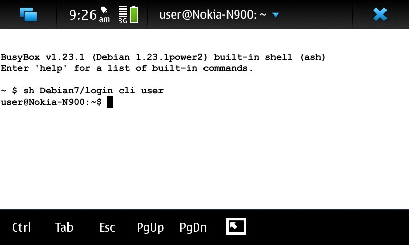
LXDE
$ sudo sh login lxde user
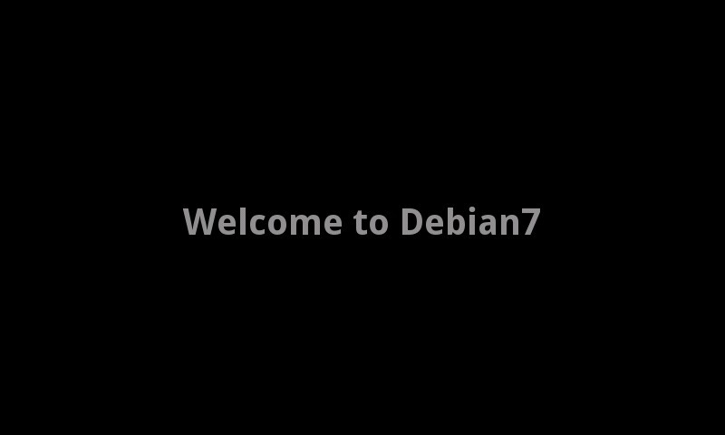
由於LXDE是屬於另一個Display，一般情況下是無法取得鍵盤的控制權，因此可以透過Zenity視窗，讓使用者點選按鈕，藉此方式取得鍵盤控制權
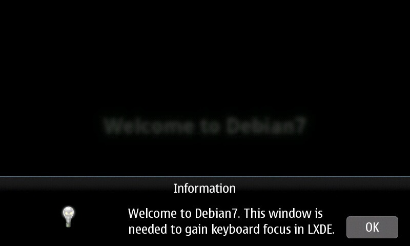
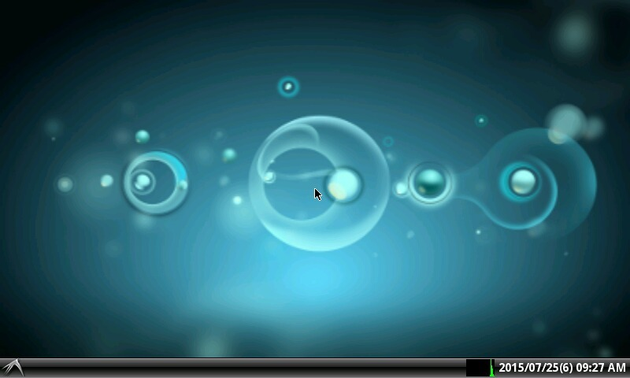
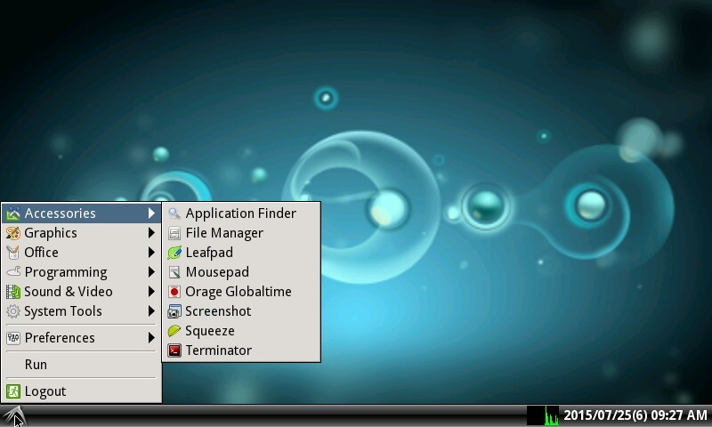
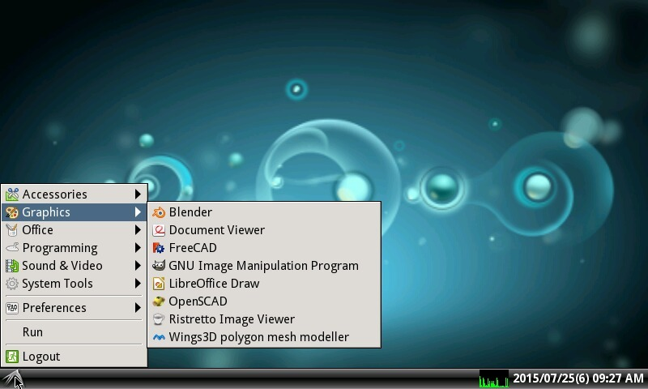
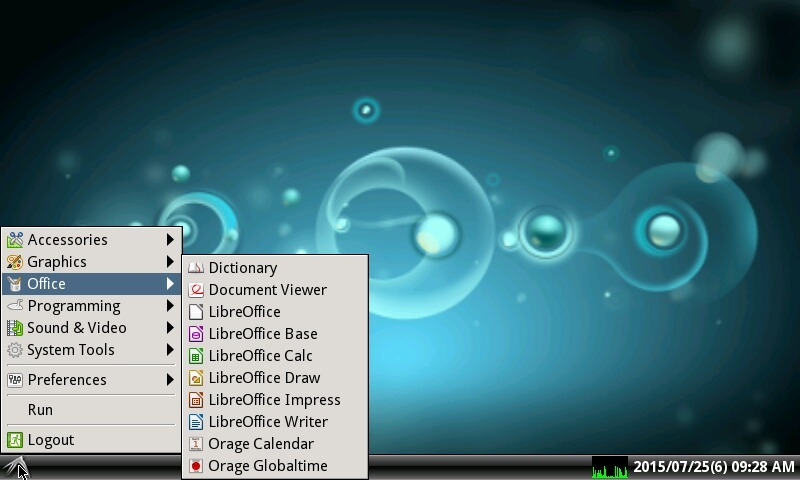
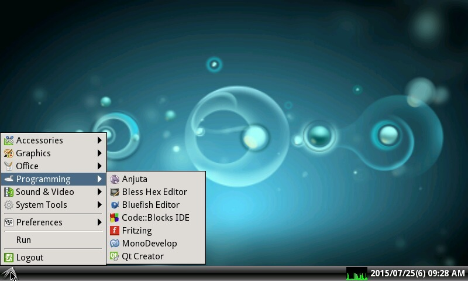
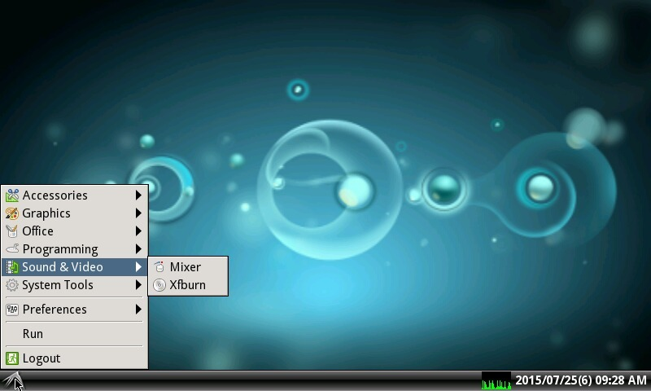
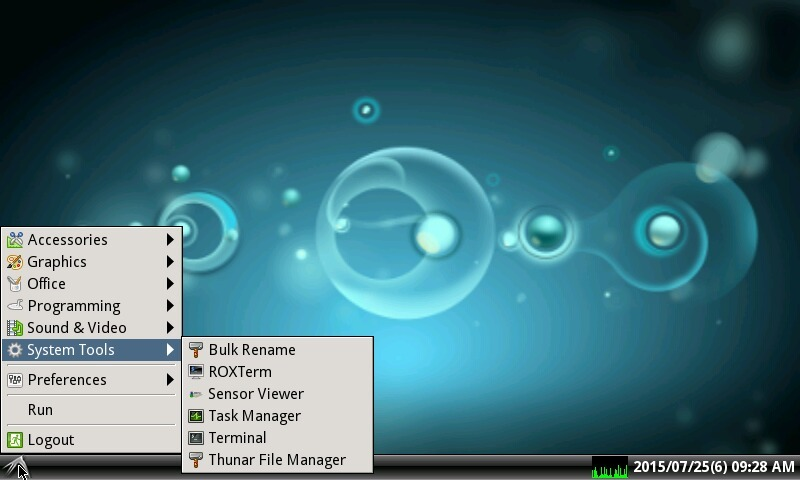
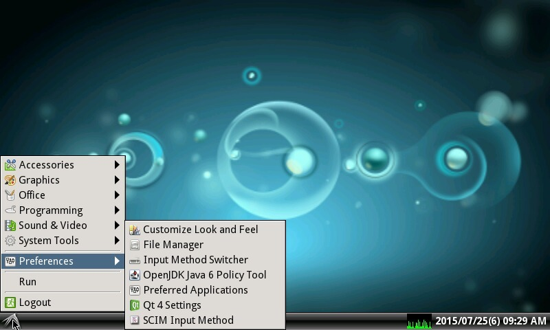
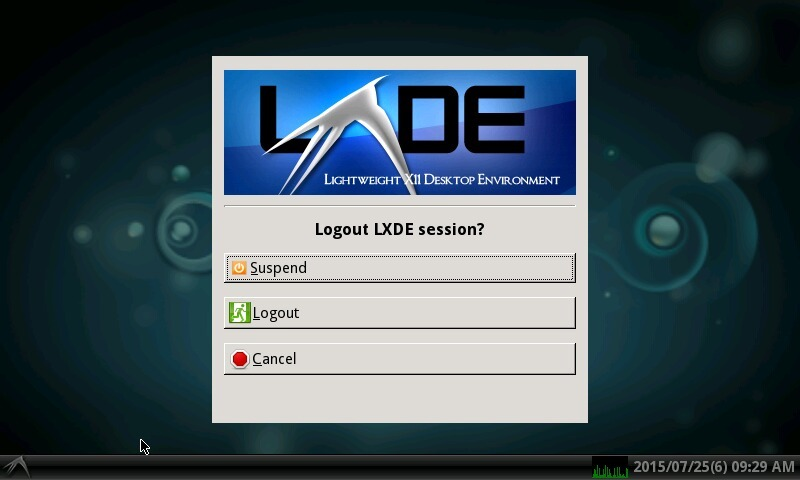
XFCE4
$ sudo sh login xfce4 user
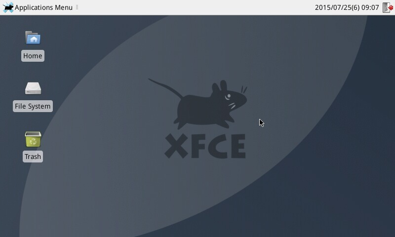
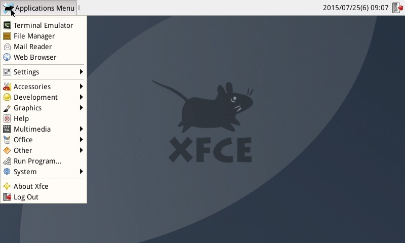
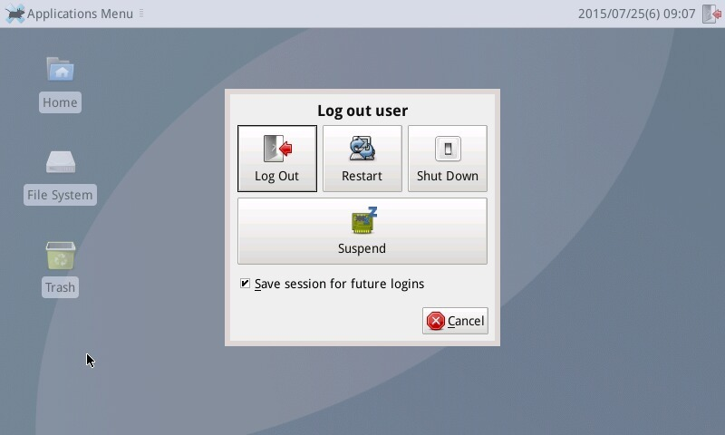